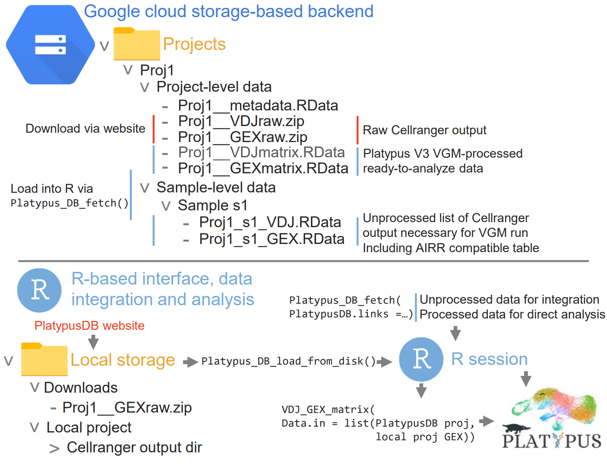

We developed PlatypusDB, a database for single cell immune repertoires. For all datasets both adaptive immune receptor information (VDJ) and single-cell transcriptomes (GEX) are present. Raw data (output from 10X Genomics Cellranger pipeline) may be downloaded directly via links in the table below. The integrated R platform, which is part of the Platypus package allows rapid and specific access to raw and processed data. Local and downloaded dataset can be readily integrated and explored using the tools provided by Platypus. The corrisponding manuscript can be found here at PlatypusDB developers et al.
The Platypus Database

Available datasets are listed below. The raw Cellranger (10X Genomics) output may be downloaded directly via the links below. To download ready-to-use PlatypusV3 VGM matrix objects, please refer to the download vignette. All components of the R interface for the Platypus DB are contained within the Platypus package . To integrate datasets download either VDJ or GEX raw data as RData objects directly to your R enviroment and run the VDJ_GEX_matrix function.
To submit a dataset refer to respective vignette and contact form.
Stay tuned for updates https://twitter.com/AlexYermanos
Available datasets
Explore the table below to find out what studies are currently featured on PlatypusDB. New studies are being added constantly - yours could be the next!
The source .csv file can be downloaded via the button below the table